第 1 页：封面
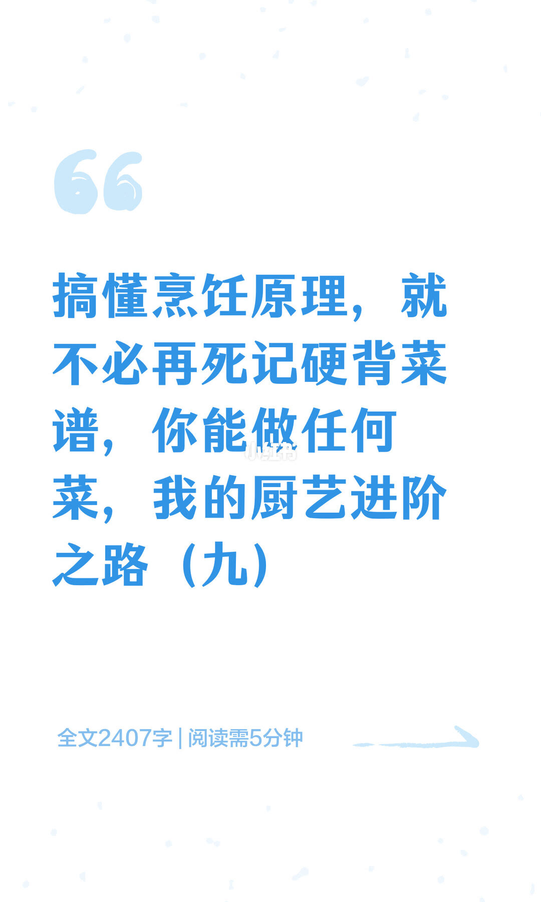
1/12封面：搞懂烹饪原理就不必死记菜谱——厨艺进阶之路（九）；约2407字。
Cover: master principles instead of rote recipes—culinary path (9).
开篇主张：知所以然，才能灵活改方、稳定出味。
第 2 页：酯化反应
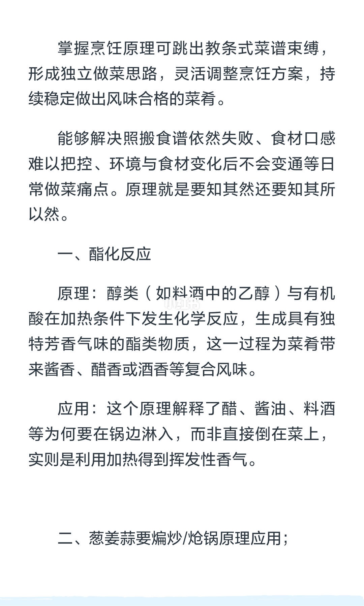
2/12酯化：酒中乙醇与有机酸加热成酯，出酱香醋香酒香；醋酱油料酒宜锅边淋入借高温。
Esterification: alcohol + acid + heat → aroma; drizzle along hot wok edge.
痛点是「照方仍失败」——先建立化学反应链。
第 3 页：葱姜蒜煸炒
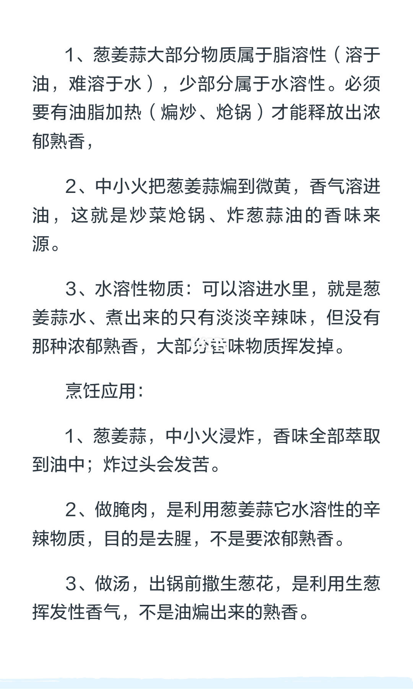
3/12葱姜蒜多脂溶：须油热煸炒出熟香；水溶部分只留淡辛，腌肉用水溶去腥，汤末撒生葱用挥发香。
Scallion/ginger/garlic: fat-soluble cooked aroma via oil; water-soluble for marinade/raw finish.
中小火煸至微黄；炸过头会苦。
第 4 页：香料出香
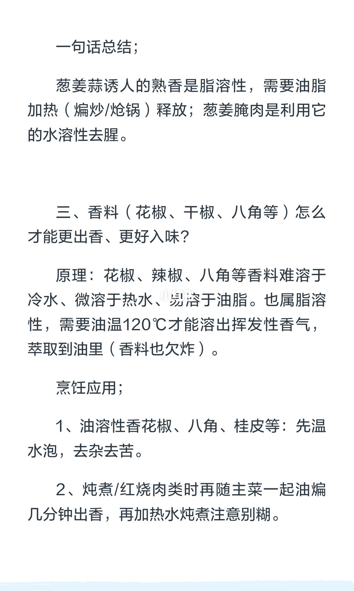
4/12香料难溶冷水、易溶油脂，约120℃油温萃取；可先温水泡去杂苦，再油煸后炖煮。
Spices need ~120°C oil extraction; soak then fry before stewing.
一句话：熟香靠油热；腌肉靠水溶去腥。
第 5 页：唤醒香料与糖锁鲜
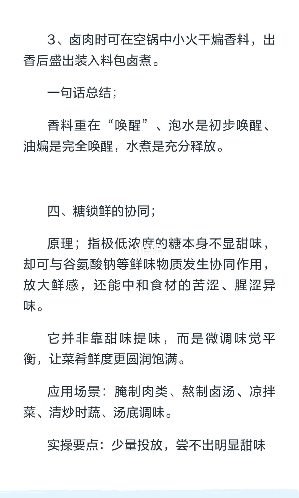
5/12香料重在唤醒：泡水→油煸→水煮；糖极低浓度协同提鲜、压苦腥，尝不出明显甜。
Awaken spices soak→oil→boil; micro sugar boosts umami without tasting sweet.
卤时可干煸香料再入料包。
第 6 页：盐与渗透压
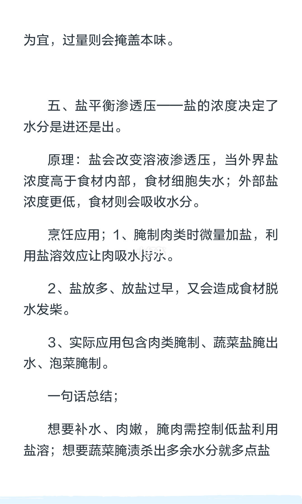
6/12盐平衡渗透压：外高则出水发柴，外低可吸水；腌肉少盐保嫩，杀青多盐逼水。
Salt osmosis: too much/too early dehydrates; tiny salt helps meat hold water.
用途分岔：保水 vs 脱水，盐量策略相反。
第 7 页：糖盐搭配与焯青
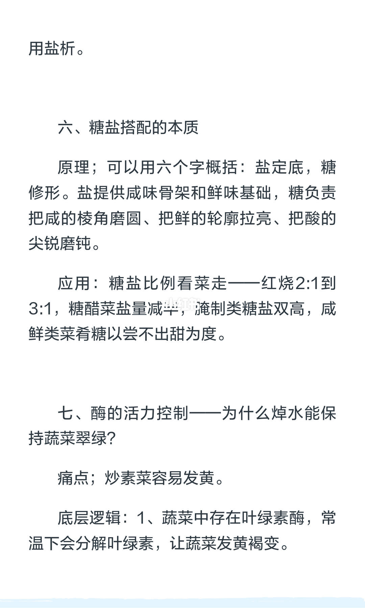
7/12糖盐本质：盐定底、糖修形；焯水灭酶加盐油护叶绿素，烫醒而非煮烂。
Salt frames, sugar shapes; blanch to kill oxidase and keep greens emerald.
红烧糖盐约2:1–3:1；糖醋减盐；咸鲜糖在阈值下。
第 8 页：凉了更甜
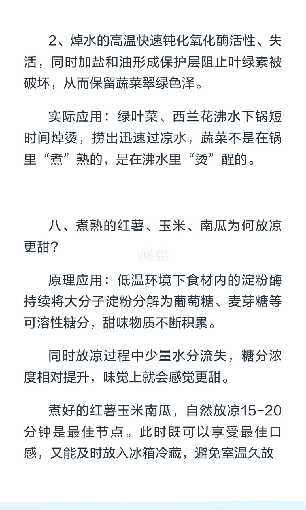
8/12红薯玉米南瓜放凉更甜：低温下淀粉酶继续分解出糖，水分略失提高糖浓度；自然凉15–20分钟为宜。
Cooked sweet potato/corn/pumpkin sweeten while cooling via amylase + mild water loss.
继续焯青逻辑：高温灭酶+冷水定色。
第 9 页：淡味配干货
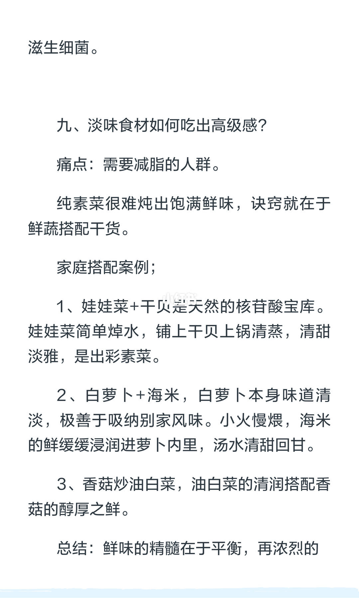
9/12淡味食材高级感：鲜蔬配干货；娃娃菜+干贝、白萝卜+海米、香菇炒油白菜。
Light veggies + dried goods (scallop/shrimp/mushroom) build umami without heavy fat.
减脂场景靠核苷酸协同，而非硬堆味精。
第 10 页：香菇水海米水
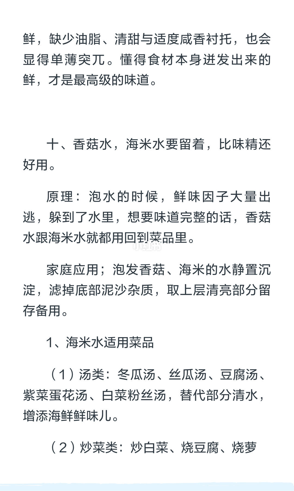
10/12香菇水海米水要留：鲜味因子溶进水；静置沉淀取上清，比味精好用。
Keep mushroom/dried-shrimp soak water—umami fled into the liquid.
适用汤类与部分炒菜底味。
第 11 页：泡发水菜谱面
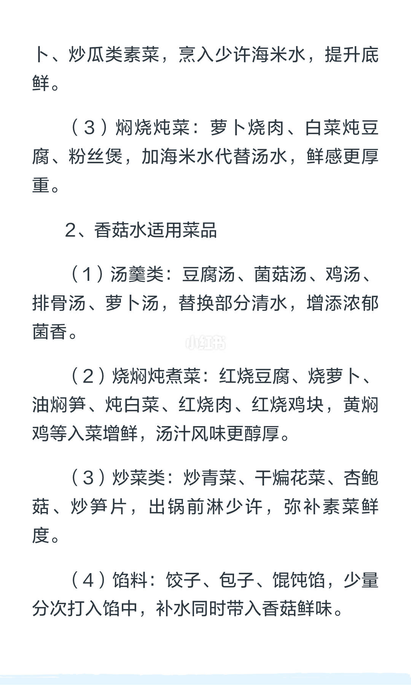
11/12海米水/香菇水进汤焖炒馅：替部分清水，出锅前少淋，馅料分次补水。
Use soak water in soups, braises, stir-fries, and dumpling fillings.
把「逃掉的鲜」还回菜里。
第 12 页：写在最后
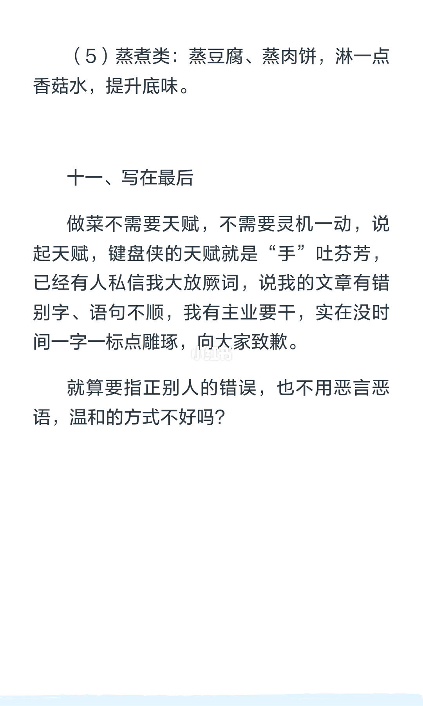
12/12结尾：厨艺不靠玄学灵感；作者回应错别字批评，呼吁温和纠错。
Closing: cooking needs principles not mystique; ask for gentle typo feedback.
蒸煮亦可淋少许香菇水垫底味。
文末汇总
核心判断：香气多脂溶靠油温唤醒；去腥/腌制用水溶；盐管渗透方向；微量糖与干货水补鲜。原理优先于死记菜谱。
- 改方先问：脂溶还是水溶？
- 香料流程：泡→煸→煮
- 泡香菇海米水沉淀回用
以上为原笔记图文观点整理，不是对该主题的全面定论。